Malaysia Trav-E-Log ©
More Iron rod Art
Pilgrims "Much of the traffic of pilgrims to and from Muslim Holy Land for the haj went through Acheen Street, where tickets for the trip were sold. Shopping was also a favorite activity for both pilgrims and their well-wishers. ACHEEN STREET GHAUT, CORE ZONE, GEORGE TOWN WORLD HERITAGE SITE.©" (index 40)
Dec 23, 2015, George Town, Penang Island, Malaysia
-------------------------------------------
Flew from Bali to Singapore and hopped a bus to Johor Bahru, Malaysia. These places have really changed since my last visit; did not recognize anything, and could not find my old guest house. Heard there was flooding on the Malay East Coast, so tried to take a train up the west coast. All fully booked for the next 10 days! So, bought a bus ticket a day later as far up the west coast as possible; the capitol, Kuala Lumpur. That bus station has been moved out to the boonies, so had to take a couple of commuter trains to get to the backpacker region in city center. Found a great shop for silk batik shirts, but not in my size. After a great meal and good night's rest, commuted back to the bus station and continued on to Lumut, jumping off place for ferries to Pulau Pangkor. Visited the Malaysia Tourist Information office, and discovered my old haunt has changed management, and was essentially booked for the week. Weather didn't look so good, so booked a bus for Penang, leaving the next morning.
-------------------------------------------
| Found a map showing the locations of a lot of the street art in George Town, so next project is to take photos of much of it in this city on Penang Island. The map itemizes the iron rod art by number, and the paintings by letter, so using the same index scheme will minimize confusion.
Shorn Hair "Barbers used to operate here. Shorn hair was simply swept into the Prangin canal. SUNGAI UJONG ROAD, BUFFER ZONE, GEORGE TOWN WORLD HERITAGE SITE.©" (index 45) |
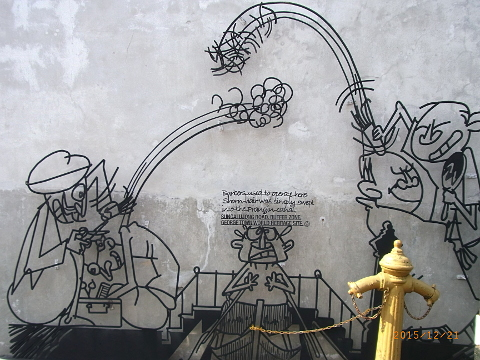 |
| Cannon Hole "A cannon shot fired during the 1867 Penang Riots made a large hole in this area, hence the name. CANNON STREET CORE ZONE, GEORGE TOWN WORLD HERITAGE SITE.©" (index 48) |
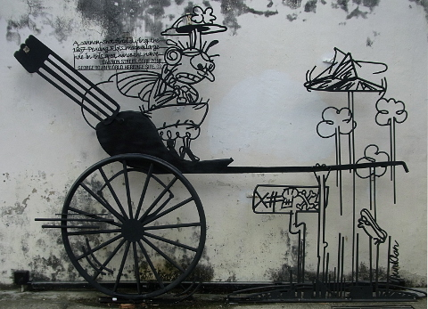 |
| Born Novelist "LUMUT LANE, CORE ZONE, GEORGE TOWN WORLD HERITAGE SITE.© The birthplace of Ahmad Rashid Talu, the first to write an original Malay novel with local setting and local characters." (index 18) |
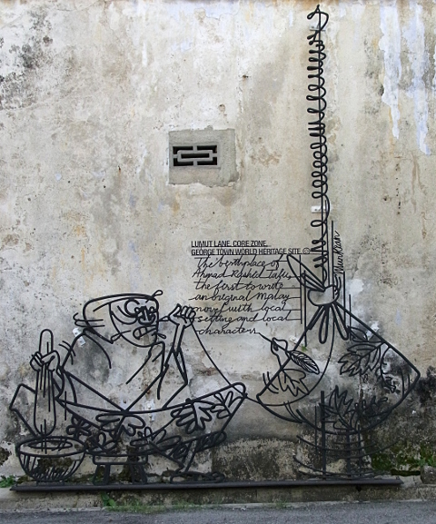 |
| Ironsmith "The striking of the lone ironsmith's hammer can still be heard along the street where once every tool had to be fashioned by heat and hand, not machines. TOK AKA LANE CORE ZONE, GEORGE TOWN WORLD HERITAGE SITE©" (index 51) |
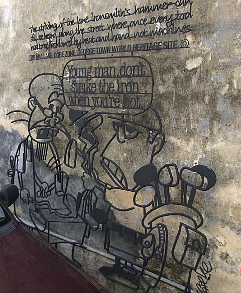 |
| Then & Now "The Hokkiens called this street Pak Thang-Ah Kay or 'Coppersmith's Street', a reference to the early Malay braziery making brass and copper wares. ARMENIAN STREET, CORE ZONE, GEORGE TOWN WORLD HERITAGE SITE©" (index 50) |
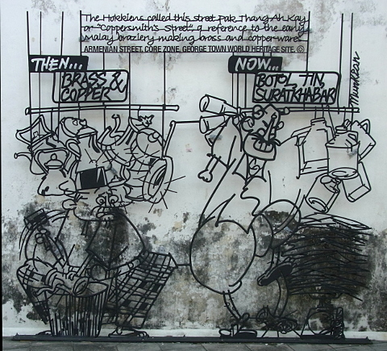 |
| Cow & Fish "Not only were haples cows bred and slaughtered here, but you could also smell the fish hung out to dry. MALAY STREET, CORE ZONE, GEORGE TOWN WORLD HERITAGE SITE©" (index 24) |
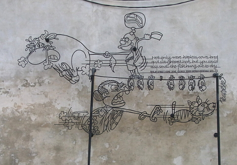 |
| Rotan CHULIA STREET, BUFFER ZONE, GEORGE TOWN WORLD HERITAGE SITE©" "Thick, Medium, or Thin?. (index 28) | 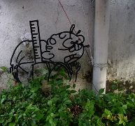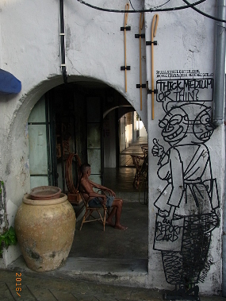 |
| Main Street "Chulia Street was one of the main streets laid out by Captain Francis Light. Today it is known as "Backpakers' Main Street." CHULIA STREET, CORE ZONE, GEORGE TOWN WORLD HERITAGE SITE©" (index 29) |
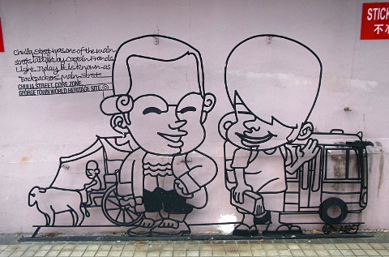 |
| Property "In the 1800s, shops and godowns on Victoria Street were built at the seafront. VICTORIA STREET, CORE ZONE, GEORGE TOWN WORLD HERITAGE SITE©" (index 22) | 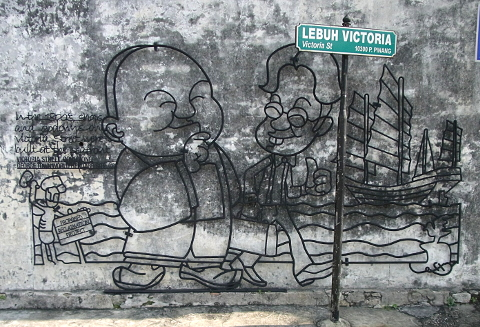 |
_____________________________________________________________ |
| Procession "The Tua Pek Kong Hneoh Grand Float Procession is held in the Year of the Tiger to wash away bad luck and bring great wealth and health. ARMENIAN STREET, CORE ZONE, GEORGE TOWN WORLD HERITAGE SITE©" (index 19) |
| 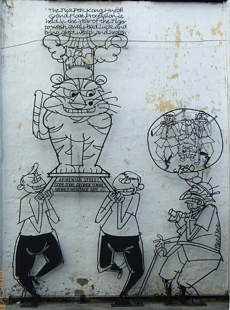 | 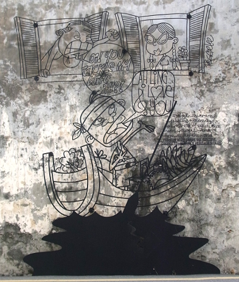 |
| Waterway "Prangin River was a bustling waterway for all manner of goods that were shipped to Penang from all over the world. PRANGIN ROAD GHAUT, BUFFER ZONE, GEORGE TOWN WORLD HERITAGE SITE©" (index 26) |
_____________________________________________________________ |
| Limousine "This was the place to go for Chinese books, stationary, coffins and paper effigies. All the pleasures of the material world can be reproduced in paper and burnt as gifts for the hereafter. CARNARVON STREET, BUFFER ZONE, GEORGE TOWN WORLD HERITAGE SITE©" (index 21) |
| 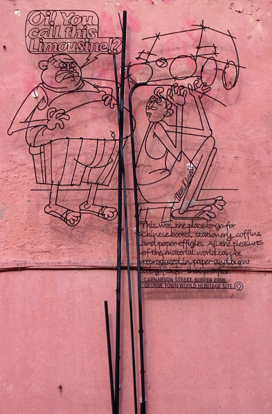 | 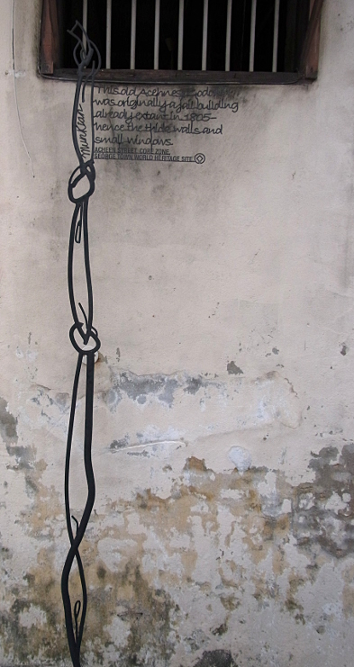 |
| Escape "This old Acehnese godown was originally a jail building already extant in 1805 - hence the thick walls and small windows. ACHEEN STREET, CORE ZONE, GEORGE TOWN WORLD HERITAGE SITE©" (index 23) |
_____________________________________________________________ |
| No Plastic Bag "A petty-trading neighborhood, where you can find activities such as drying of salted fish and basket weaving. PRANGIN LANE, BUFFER ZONE, GEORGE TOWN WORLD HERITAGE SITE©" (index 25) |
| 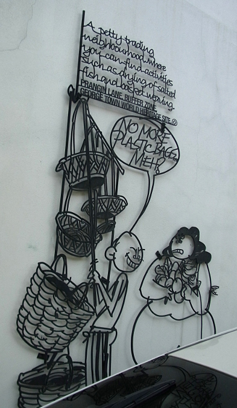 | 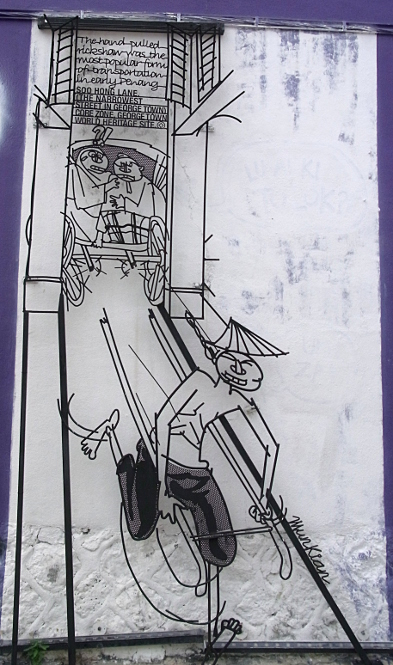 |
| Too Narrow "The hand pulled rickshaw was the most popular form of transportation in early Penang. SOO HONG LANE, (THE NARROWEST STREET IN GEORGE TOWN) CORE ZONE, GEORGE TOWN WORLD HERITAGE SITE©" (index 20) |
_____________________________________________________________ |
| Chingay (composite) "The Penang Chinese first performed Chingay in 1919 during deity processions. Today, the art has evolved to become a unique multicultural performance. WELD QUAY, BUFFER ZONE, GEORGE TOWN WORLD HERITAGE SITE©" (index 52) |
| 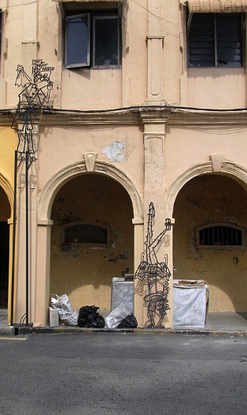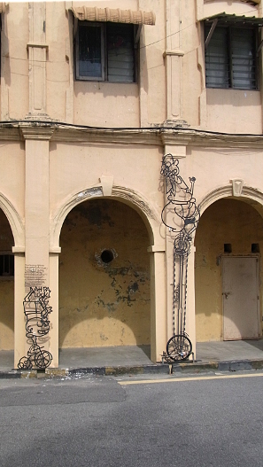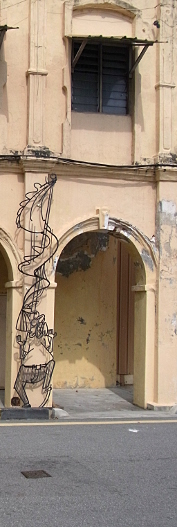 |
Babu Bill
Question? Contact me at the Juno.com address Dancer2SEAsia.
Have a nice day!